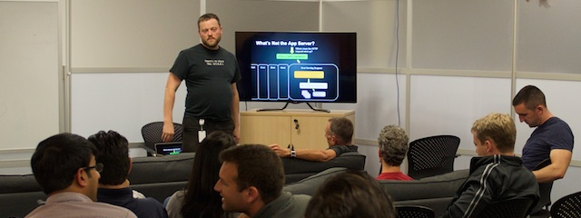

Looking for a full-stack generalist software engineer? I've done it all, from UI and application code, to Big Data and Analytics, to embedded and multimedia, to deep-dive SQL and NoSQL optimization, to distributed systems design. I've worked in 20+ languages over nearly 30 years, from C and assembly building operating systems and device drivers to scaling high-traffic Ruby on Rails sites.
Looking for a lead software engineer? I've been technical lead, manager and lead engineer on small, highly productive teams at several companies. I can turn a simple list of priorities into team goals and then make them happen. I'm comfortable operating independently — for instance, when repairing and rebuilding OnLive's unmaintained analytics system with the simple mandate "find out how it works, fix it, extend it, don't break production."
Want an engineering lead with a great history and pedigree? I taught Ruby on Rails for a Masters Degree program at Carnegie Mellon West. I graduated from Carnegie Mellon (East) for my undergrad degrees (Math and Comp Sci). I've spoken at Ruby and Cassandra conferences. I'm an internationally recognized author on Ruby web frameworks, as well as server deployment and provisioning. I've worked for successful startups (Ooyala, PeakStream).
Perhaps I can help you out. You can hit "contact me" up above, or scroll down for more details. But I'm a lot more than "just" an amazing engineer.
(If you're a software engineer, you started with the tech section and you read to the end. Hello! Please skip down to this section for substantiation of my claims and all the low-level details. You'll enjoy that more than my sales pitch, I expect.)
Hiring well-known members of an open-source community can help you recruit in that community.
At OnLive, I organized four local meetups for recruiting, drawing crowds of 50+ programmers before we limited attendance for space reasons. I mentioned OnLive at my Golden Gate Ruby Conference presentation on building your own ORM. Ruby people are often very hard to recruit, and I was able to find a few "extra" for OnLive.
I can give recruiting talks about Ruby, Rails, DevOps, NoSQL tools, analytics, Big Data and many other topics. Engineers with those specialties normally cost tens of thousands of dollars to recruit. Meetups cost under a hundred dollars, mostly for snacks.
Shall I give a few recruiting meetups for you?
I also present internally about Ruby, Rails, Cassandra, ZooKeeper and other topics — over fifteen talks at OnLive and many at Ooyala before that. I can record my talks and you probably want me to.
New employee on-boarding is a huge strategic asset and few companies invest in it. Want a great presenter who can write, give and record a set of talks to jump-start your on-boarding process?
I can do that for you.
I'm the author of Rebuilding Rails and Rails Deploy In An Hour, both real costs-money projects that teach programming skills. I sell them independently and do all my own promotion.
There are advantages to an employee with those skills. Those advantages could be yours.
I mentioned some: team leadership, self-management, recruiting, on-boarding. But money depends on me communicating clearly when I'm selling. So I'm good at it. This makes me excellent at instruction, documentation, mentoring and several other processes that make your other engineers better, saving salary and reducing time-to-market.
My marketing experience also means I can communicate with your Product, Sales and Marketing groups in their own language. I know conversion rates and A/B tests, statistical significance, email marketing and how to present data to a less-technical audience. That means more effective engineering provided to Product and Marketing which means better measures of product/market fit which means more money. This is roughly the same activity as "growth hacking" — engineering support makes your marketing more effective.
If you're still pre-profit, don't worry. I can process and present data for funding decks, and I've done that for OnLive: analytics data to convince people of the product's potential, in a way that looks good.
I can do that for your Marketing group, your product managers and your potential customers and investors as well.
We've talked a lot about what I can do for you. Better yet, you can pick any of those benefits and tell me to skip the others. Let's go over that list once more:
There's no such thing as "all", of course... If I can do all of these for you, you have other uses in mind too. I'm looking forward to it!
But there's no such thing as a free lunch, right? Let's talk about what I need from you.
I'm looking for a position where I can make a difference. Many of the benefits I suggest only work if I have some leverage. That means I need at least a team lead position. I need a reasonably free hand to help your company. That also means being paid appropriately — that's necessary to make changes stick, too. I can add a lot of value to your company, but I need to capture some of it as well.
I also care a lot about work-life balance. I have two adorable daughters and a wonderful wife. If we can negotiate 80% time then you can get a lot of those big advantages above at a lower cost. This may make my rate more acceptable to your budget. I don't mind occasional crunch-time or odd hours. But I need actual 40-hour weeks most weeks (or 32-hour weeks with 80% time.) Think value, not price: the benefits above are worth my salary, and I will achieve them during normal work hours.
I'm in Fremont, CA. South Bay locations are great, remote is great, but San Francisco doesn't work. I'm not looking to relocate, inside California or outside it.
If this all sounds good, I'd love to get together and talk. Specifically, if you're a hiring manager, I'd love to talk to you about what positions might be appropriate in your organization. Hit "contact me" up at the very top there!
If you're a recruiter, I probably won't find much to say to you. Unfortunately, standard engineer positions don't pay what I'm looking for, or have the leverage to make the difference I'm looking to make. But RECRUITERS DON'T READ ANYWAY, EVEN ALL-CAPS BOLD, so I'm pretty resigned to copy-and-pasting this into email.
I've made some pretty big claims above. You might want to know what's behind them. But I don't start with these because that makes for a really boring page.
Here's my portfolio, including professional and personal projects, speaking gigs and interviews. That should substantiate things like "used a lot of technologies and languages." My GitHub profile is kinda the same thing with no screenshots ;-)
As for "led projects": I was an architect on a UI framework for ACCESS. I've led a Ruby web framework project and an analytics rescue project at OnLive. I was a tech lead for a deployment project and lead architect for a Cassandra-backed metrics system at Ooyala. There have been other things, but those are the big recent ones.
I've spoken at two major conferences: GoGaRuCo and the Cassandra Summit. I've also spoken at maybe 15 local meetups, including the OnLive ones. I've had a few online interviews like The Ruby Hangout and a remote meetup with a dev bootcamp in Toronto. I've also been on The Ruby Rogues (scheduled for a second time!), created a guest episode of RubyTapas and generally "hung out with the cool kids" a little in the Ruby community. They know who I am, but I'm not Avdi Grimm or anything.
My ebook, Rebuilding Rails, has sold 710 copies as I write this. I'm selling to a specialist audience (intermediate Rails programmers) usually at forty bucks a pop. And I'm doing all the sales myself. So that's still quite good.
My deployment class, Rails Deploy In An Hour, is quite new as I write this. So it hasn't sold much, around $1200 worth, but I've barely started marketing it. That's one reason you didn't see more claims about it — it hasn't existed long. The open-source software attached to it is called Ruby Mad Science. Read through it if you like. Deployment and provisioning code is painful to write and kind of messy, but I'm proud of it!
There are also a lot of cool things that I didn't mention above because managers and business guys tend not to care about them. I started an OnLive engineering blog and did most of the writing for it. I created the GitHub organization, too, and wrote a lot of the code there. And hey, look through the personal section of my portfolio, especially the later bits. There's some really fun stuff there.